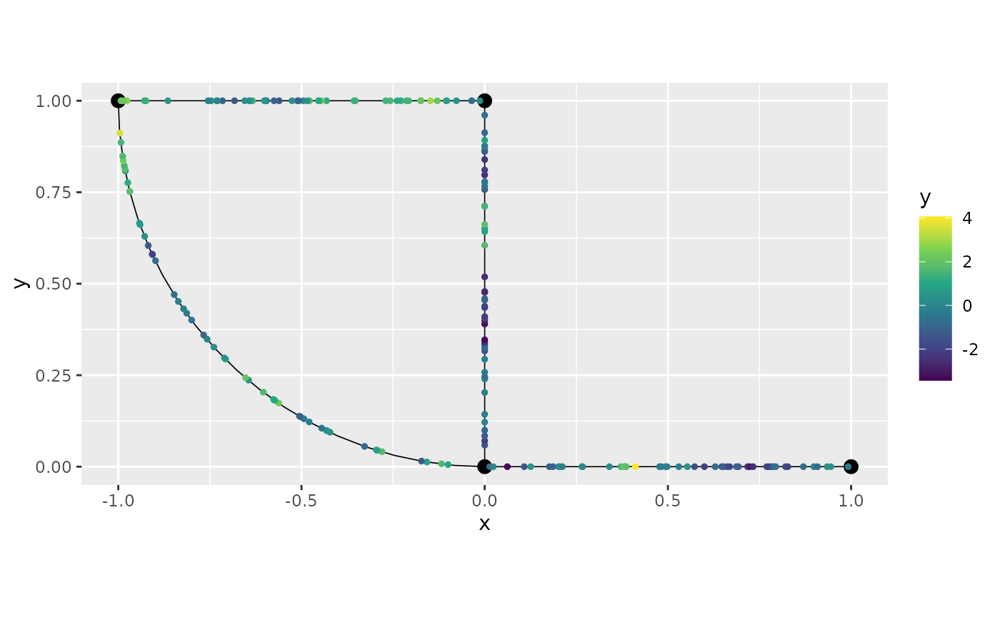

inlabru interface of Whittle--Matérn fields
David Bolin, Alexandre B. Simas, and Jonas Wallin
Created: 2022-11-23. Last modified: 2024-07-19.
Source:vignettes/inlabru_interface.Rmd
inlabru_interface.RmdIntroduction
In this vignette we will present our inlabru interface
to Whittle–Matérn fields. The underlying theory for this approach is
provided in Bolin, Simas, and Wallin (2024) and Bolin,
Simas, and Wallin (2023).
For an introduction to the metric_graph class, please
see the Working with metric graphs
vignette.
For handling data manipulation on metric graphs, see Data manipulation on metric graphs
For our R-INLA interface, see the INLA interface of Whittle–Matérn fields
vignette.
In the Gaussian random fields on metric
graphs vignette, we introduce all the models in metric graphs
contained in this package, as well as, how to perform statistical tasks
on these models, but without the R-INLA or
inlabru interfaces.
We will present our inlabru interface to the
Whittle-Matérn fields by providing a step-by-step illustration.
The Whittle–Matérn fields are specified as solutions to the stochastic differential equation on the metric graph . We can work with these models without any approximations if the smoothness parameter is an integer, and this is what we focus on in this vignette. For details on the case of a general smoothness parameter, see Whittle–Matérn fields with general smoothness.
A toy dataset
Let us begin by loading the MetricGraph package and
creating a metric graph:
library(MetricGraph)
edge1 <- rbind(c(0,0),c(1,0))
edge2 <- rbind(c(0,0),c(0,1))
edge3 <- rbind(c(0,1),c(-1,1))
theta <- seq(from=pi,to=3*pi/2,length.out = 20)
edge4 <- cbind(sin(theta),1+ cos(theta))
edges = list(edge1, edge2, edge3, edge4)
graph_bru <- metric_graph$new(edges = edges)Let us add 50 random locations in each edge where we will have observations:
obs_per_edge <- 50
obs_loc <- NULL
for(i in 1:(graph_bru$nE)) {
obs_loc <- rbind(obs_loc,
cbind(rep(i,obs_per_edge),
runif(obs_per_edge)))
}We will now sample in these observation locations and plot the latent field:
sigma <- 2
alpha <- 1
nu <- alpha - 0.5
r <- 0.15 # r stands for range
u <- sample_spde(range = r, sigma = sigma, alpha = alpha,
graph = graph_bru, PtE = obs_loc)
graph_bru$plot(X = u, X_loc = obs_loc)
Let us now generate the observed responses, which we will call
y. We will also plot the observed responses on the metric
graph.
n_obs <- length(u)
sigma.e <- 0.1
y <- u + sigma.e * rnorm(n_obs)
graph_bru$plot(X = y, X_loc = obs_loc)
inlabru implementation
We will now present our inlabru implementation of the
Whittle-Matérn fields for metric graphs. It has the advantage, over our
R-INLA implementation, of not requiring the user to provide
observation matrices, indices nor stack objects.
We are now in a position to fit the model with our
inlabru implementation. Because of this, we need to add the
observations to the graph, which we will do with the
add_observations() method.
# Creating the data frame
df_graph <- data.frame(y = y, edge_number = obs_loc[,1],
distance_on_edge = obs_loc[,2])
# Adding observations and turning them to vertices
graph_bru$add_observations(data = df_graph, normalized=TRUE)## Adding observations...
graph_bru$plot(data="y")
Now, we load INLA and inlabru packages. We
will also need to create the inla model object with the
graph_spde function. By default we have
alpha=1.
library(INLA)
library(inlabru)
spde_model_bru <- graph_spde(graph_bru)Now, we create inlabru’s component, which is a
formula-like object. The index parameter in inlabru is not
used in our implementation, thus, we replace it by the repl
argument, which tells which replicates to use. If there is no
replicates, we supply NULL.
cmp <-
y ~ -1 + Intercept(1) + field(loc,
model = spde_model_bru)Now, we create the data object to be passed to the bru()
function:
data_spde_bru <- graph_data_spde(spde_model_bru, loc_name = "loc")we directly fit the model by providing the data
component of the data_spde_bru list:
spde_bru_fit <-
bru(cmp, data=data_spde_bru[["data"]])Let us now obtain the estimates in the original scale by using the
spde_metric_graph_result() function, then taking a
summary():
spde_bru_result <- spde_metric_graph_result(spde_bru_fit,
"field", spde_model_bru)
summary(spde_bru_result)## mean sd 0.025quant 0.5quant 0.975quant mode
## sigma 1.6497900 0.1353570 1.4017600 1.6429600 1.935600 1.6158000
## range 0.0863836 0.0171032 0.0584216 0.0844029 0.125348 0.0804038We will now compare the means of the estimated values with the true values:
result_df_bru <- data.frame(
parameter = c("std.dev", "range"),
true = c(sigma, r),
mean = c(
spde_bru_result$summary.sigma$mean,
spde_bru_result$summary.range$mean
),
mode = c(
spde_bru_result$summary.sigma$mode,
spde_bru_result$summary.range$mode
)
)
print(result_df_bru)## parameter true mean mode
## 1 std.dev 2.00 1.64979474 1.61580392
## 2 range 0.15 0.08638358 0.08040381We can also plot the posterior marginal densities with the help of
the gg_df() function:
posterior_df_bru_fit <- gg_df(spde_bru_result)
library(ggplot2)
ggplot(posterior_df_bru_fit) + geom_line(aes(x = x, y = y)) +
facet_wrap(~parameter, scales = "free") + labs(y = "Density")
Kriging with the inlabru implementation
Unfortunately, our inlabru implementation is not
compatible with inlabru’s predict() method.
This has to do with the nature of the metric graph’s object.
To this end, we have provided a different predict()
method. We will now show how to do kriging with the help of this
function.
We begin by creating a data list with the positions we want the predictions. In this case, we will want the predictions on a mesh.
Let us begin by obtaining an evenly spaced mesh with respect to the base graph:
obs_per_edge_prd <- 50
graph_bru$build_mesh(n = obs_per_edge_prd)Let us plot the resulting graph:
graph_bru$plot(mesh=TRUE)
The positions we want are the mesh positions, which can be obtained
by using the get_mesh_locations() method. We also set
bru=TRUE and loc="loc" to obtain a data list
suitable to be used with inlabru.
data_list <- graph_bru$get_mesh_locations(bru = TRUE,
loc = "loc")We can now obtain the predictions by using the predict()
method. Observe that our predict() method for graph models
is a bit different from inlabru’s standard
predict() method. Indeed, the first argument is the model
created with the graph_spde() function, the second is
inlabru’s component, and the remaining is as done with the
standard predict() method in inlabru.
field_pred <- predict(spde_model_bru,
cmp,
spde_bru_fit,
newdata = data_list,
formula = ~field)Finally, we can plot the predictions together with the data:
plot(field_pred)
We can also obtain a 3d plot by setting plotly to
TRUE:
plot(field_pred, plotly = TRUE)An example with alpha = 2
We will now show an example where the parameter alpha is
equal to 2. There is essentially no change in the commands above. Let us
first clear the observations:
graph_bru$clear_observations()Let us now simulate the data with alpha=2. We will now
sample in these observation locations and plot the latent field:
sigma <- 2
alpha <- 2
nu <- alpha - 0.5
r <- 0.15 # r stands for range
u <- sample_spde(range = r, sigma = sigma, alpha = alpha,
graph = graph_bru, PtE = obs_loc)
graph_bru$plot(X = u, X_loc = obs_loc)
In the same way as before we will generate y and add the
observations:
n_obs <- length(u)
sigma.e <- 0.1
y <- u + sigma.e * rnorm(n_obs)
df_graph <- data.frame(y = y, edge_number = obs_loc[,1],
distance_on_edge = obs_loc[,2])
graph_bru$add_observations(data=df_graph, normalized=TRUE)Let us now create the model object for alpha=2:
spde_model_alpha2 <- graph_spde(graph_bru, alpha = 2)Now, we will create the new data object with the
graph_data_spde() function, in which we need to pass the
argument loc_name that is needed for
bru():
data_spde_alpha2 <- graph_data_spde(graph_spde = spde_model_alpha2,
loc_name = "loc")Now, we create inlabru’s component:
cmp_alpha2 <-
y ~ -1 + Intercept(1) + field(loc,
model = spde_model_alpha2)we directly fit the model by providing the data
component of the data_spde_bru list:
spde_bru_fit_alpha2 <-
bru(cmp_alpha2, data=data_spde_alpha2[["data"]])Let us now obtain the estimates in the original scale by using the
spde_metric_graph_result() function, then taking a
summary():
spde_bru_result_alpha2 <- spde_metric_graph_result(spde_bru_fit_alpha2,
"field", spde_model_alpha2)
summary(spde_bru_result_alpha2)## mean sd 0.025quant 0.5quant 0.975quant mode
## sigma 2.025810 0.2301330 1.612040 2.011930 2.517710 1.986000
## range 0.152791 0.0168416 0.122475 0.151861 0.188533 0.149931We will now compare the means of the estimated values with the true values:
result_df_bru <- data.frame(
parameter = c("std.dev", "range"),
true = c(sigma, r),
mean = c(
spde_bru_result_alpha2$summary.sigma$mean,
spde_bru_result_alpha2$summary.range$mean
),
mode = c(
spde_bru_result_alpha2$summary.sigma$mode,
spde_bru_result_alpha2$summary.range$mode
)
)
print(result_df_bru)## parameter true mean mode
## 1 std.dev 2.00 2.025806 1.9860029
## 2 range 0.15 0.152791 0.1499307We can also plot the posterior marginal densities with the help of
the gg_df() function:
posterior_df_bru_fit <- gg_df(spde_bru_result_alpha2)
library(ggplot2)
ggplot(posterior_df_bru_fit) + geom_line(aes(x = x, y = y)) +
facet_wrap(~parameter, scales = "free") + labs(y = "Density")
Let us now do prediction with alpha=2. We proceed as
before, and we will use the same data list data_list to do
prediction on the mesh locations. Thus, we will obtain predictions by
using the predict() method. Observe that, again, we will
use our predict method, instead of the default one from
inlabru.
field_pred_alpha2 <- predict(spde_model_alpha2,
cmp_alpha2,
spde_bru_fit_alpha2,
newdata = data_list,
formula = ~field)Finally, we can plot the predictions together with the data:
plot(field_pred_alpha2)
We can also obtain a 3d plot by setting plotly to
TRUE:
plot(field_pred_alpha2, plotly = TRUE)Fitting inlabru models with replicates
We will now illustrate how to use our inlabru
implementation to fit models with replicates.
To simplify exposition, we will use the same base graph. So, we begin by clearing the observations:
graph_bru$clear_observations()We will use the same observation locations as for the previous cases. Let us sample 30 replicates:
sigma_rep <- 1.5
alpha_rep <- 1
nu_rep <- alpha_rep - 0.5
r_rep <- 0.2 # r stands for range
n_repl <- 30
u_rep <- sample_spde(range = r_rep, sigma = sigma_rep,
alpha = alpha_rep,
graph = graph_bru, PtE = obs_loc,
nsim = n_repl)Let us now generate the observed responses, which we will call
y_rep.
n_obs_rep <- nrow(u_rep)
sigma_e <- 0.1
y_rep <- u_rep + sigma_e * matrix(rnorm(n_obs_rep * n_repl),
ncol=n_repl)We can now add the the observations by setting the group
argument to repl:
dl_rep_graph <- lapply(1:ncol(y_rep), function(i){data.frame(y = y_rep[,i],
edge_number = obs_loc[,1],
distance_on_edge = obs_loc[,2],
repl = i)})
dl_rep_graph <- do.call(rbind, dl_rep_graph)
graph_bru$add_observations(data = dl_rep_graph, normalized=TRUE,
group = "repl")## Adding observations...By definition the plot() method plots the first
replicate. We can select the other replicates with the
group argument. See the Working with metric graphs for more
details.
graph_bru$plot(data="y")
Let us plot another replicate:
graph_bru$plot(data="y", group=2)
Let us now create the model object:
spde_model_bru_rep <- graph_spde(graph_bru)Let us first create a model using the replicates 1, 3, 5, 7 and 9. To
this end, we provide the vector of the replicates we want as the
input argument to the field. The
graph_data_spde() acts as a helper function when building
this vector. All we need to do, is to use the repl
component of the list created when using the
graph_data_spde()
data_spde_bru <- graph_data_spde(spde_model_bru_rep,
loc_name = "loc",
repl=c(1,3,5,7,9))
repl <- data_spde_bru[["repl"]]
cmp_rep <-
y ~ -1 + Intercept(1) + field(loc,
model = spde_model_bru_rep,
replicate = repl)Now, we fit the model:
spde_bru_fit_rep <-
bru(cmp_rep,
data=data_spde_bru[["data"]])Let us see the estimated values in the original scale:
spde_result_bru_rep <- spde_metric_graph_result(spde_bru_fit_rep,
"field", spde_model_bru_rep)
summary(spde_result_bru_rep)## mean sd 0.025quant 0.5quant 0.975quant mode
## sigma 1.467540 0.0718724 1.333240 1.465710 1.614180 1.465070
## range 0.190224 0.0214185 0.152123 0.188793 0.236204 0.185802Let us compare with the true values:
result_df_bru_rep <- data.frame(
parameter = c("std.dev", "range"),
true = c(sigma_rep, r_rep),
mean = c(
spde_result_bru_rep$summary.sigma$mean,
spde_result_bru_rep$summary.range$mean
),
mode = c(
spde_result_bru_rep$summary.sigma$mode,
spde_result_bru_rep$summary.range$mode
)
)
print(result_df_bru_rep)## parameter true mean mode
## 1 std.dev 1.5 1.4675405 1.4650702
## 2 range 0.2 0.1902242 0.1858022We will now show how to fit the model considering all replicates. To
this end, we simply set the repl argument in
graph_data_spde() function to .all.
data_spde_bru_rep <- graph_data_spde(spde_model_bru_rep,
loc_name = "loc",
repl=".all")
repl <- data_spde_bru_rep[["repl"]]
cmp_rep <- y ~ -1 + Intercept(1) + field(loc,
model = spde_model_bru_rep,
replicate = repl)Similarly, we fit the model, by setting the repl
argument to “.all” inside the graph_data_spde()
function:
spde_bru_fit_rep <-
bru(cmp_rep,
data=data_spde_bru_rep[["data"]])Let us see the estimated values in the original scale:
spde_result_bru_rep <- spde_metric_graph_result(spde_bru_fit_rep,
"field", spde_model_bru_rep)
summary(spde_result_bru_rep)## mean sd 0.025quant 0.5quant 0.975quant mode
## sigma 1.488390 0.02958690 1.431740 1.488000 1.547590 1.488160
## range 0.191829 0.00866534 0.175479 0.191575 0.209524 0.191004Let us compare with the true values:
result_df_bru_rep <- data.frame(
parameter = c("std.dev", "range"),
true = c(sigma_rep, r_rep),
mean = c(
spde_result_bru_rep$summary.sigma$mean,
spde_result_bru_rep$summary.range$mean
),
mode = c(
spde_result_bru_rep$summary.sigma$mode,
spde_result_bru_rep$summary.range$mode
)
)
print(result_df_bru_rep)## parameter true mean mode
## 1 std.dev 1.5 1.4883936 1.488157
## 2 range 0.2 0.1918293 0.191004An application with real data
For this example we will consider the pems data
contained in the MetricGraph package. This data was illustrated in (Bolin, Simas, and Wallin 2023). The data
consists of traffic speed observations on highways in the city of San
Jose, California. The traffic speeds are stored in the variable
y. We will create the metric graph setting
longlat = TRUE since the coordinates are given in Longitude
and Latitude. We will also add the observations to the metric graph
object:
pems_graph <- metric_graph$new(edges=pems$edges, longlat=TRUE)
pems_graph$add_observations(data=pems$data, normalized=TRUE)
pems_graph$prune_vertices()Let us now plot the data. We will choose the data such that longitude
is between -121.905 and 121.875, and latitude
is between 37.312 and 37.328:
p <- pems_graph$filter(-121.905< .coord_x, .coord_x < -121.875,
37.312 < .coord_y, .coord_y < 37.328) %>%
pems_graph$plot(data="y", vertex_size=0,
data_size=4)
p + xlim(-121.905,-121.875) + ylim(37.312,37.328)
We will now create the model, fit, and do predictions, using inlabru:
spde_model_bru_pems <- graph_spde(pems_graph)
cmp <- y ~ -1 + Intercept(1) + field(loc,
model = spde_model_bru_pems)
data_spde_bru_pems <- graph_data_spde(spde_model_bru_pems,
loc_name = "loc")
spde_bru_fit_pems <- bru(cmp, data=data_spde_bru_pems[["data"]])Let us see the estimated values in the original scale:
spde_result_bru_pems <- spde_metric_graph_result(spde_bru_fit_pems,
"field", spde_model_bru_pems)
summary(spde_result_bru_pems)## mean sd 0.025quant 0.5quant 0.975quant mode
## sigma 56.6819 48.9055 15.9256 42.2256 185.827 27.5085
## range 286.1390 867.4210 15.0924 78.1424 1891.370 24.1596We can now get the mesh locations to do prediction. We start by
creating a mesh and extracting the indexes of the mesh such that
longitude is between -121.905 and 121.875, and
latitude is between 37.312 and 37.328:
pems_graph$build_mesh(h=0.1)
# Getting mesh coordinates
mesh_coords <- pems_graph$mesh$V
# Finding coordinates such that longitude is between
# `-121.905` and `121.875`, and latitude is between `37.312` and `37.328`
idx_x <- (mesh_coords[,1] > -121.905) & (mesh_coords[,1] < -121.875)
idx_y <- (mesh_coords[,2] > 37.312) & (mesh_coords[,2] < 37.328)
idx_xy <- idx_x & idx_yWe can now create the data list in which we want to do prediction:
pred_coords <- list()
pred_coords[["loc"]] <- pems_graph$mesh$VtE[idx_xy,]Finally, we can do the prediction and plot. Observe that we are
setting improve_plot=TRUE to improve the quality of the
plot, however, it increases to the computational cost, since it will
call the compute_PtE_edges() method internally.
field_pred_pems <- predict(spde_model_bru_pems, cmp,
spde_bru_fit_pems,
newdata = pred_coords,
formula = ~ Intercept + field)
plot(field_pred_pems, edge_width = 0.5, vertex_size = 0,
improve_plot=TRUE) +
xlim(-121.905,-121.875) + ylim(37.316,37.328)